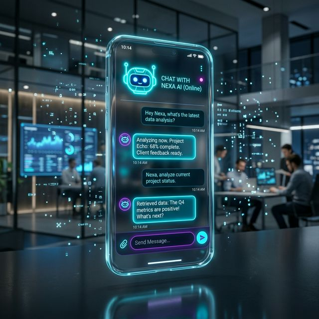

Atención al cliente 24/7 y ventas en piloto automático.

Integramos inteligencia artificial y flujos de conversación lógicos utilizando las APIs oficiales. Diseñamos un camino de decisión para tus clientes que filtra interesados, responde dudas comunes e incluso puede agendar citas sin intervención humana.
La inmediatez es la clave del cierre en el mundo digital. Un bot bien configurado asegura que ningún cliente sea ignorado y que tu negocio esté trabajando para ti incluso mientras duermes.
Ideal para negocios con un alto volumen de consultas repetitivas, inmobiliarias, clínicas, restaurantes y cualquier ecommerce que quiera escalar su atención sin aumentar su personal.